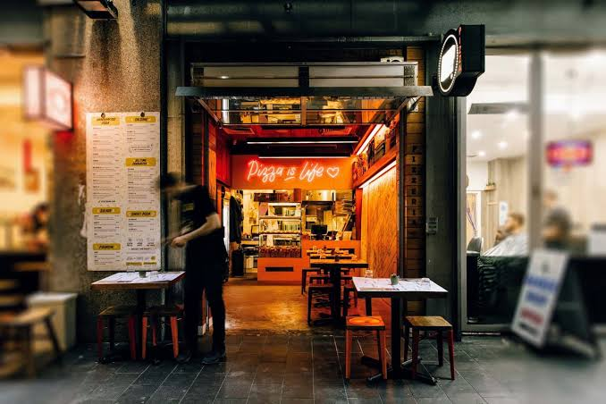

ABOUT US
Our Story
Craving authentic gourmet and traditional pizza? Welcome to Tony Pizzeria, where handcrafted Italian flavors meet quick local convenience. If you are looking for an unforgettable meal, you do not have to look any further.
We make it easy for you to satisfy your appetite on your own schedule. Simply place your order online, pick a time that works for you, and swing by to collect your food piping hot right from the oven.
Our menu is packed with classics to satisfy every dynamic taste. You can enjoy traditional favorites like the rich Margherita, fresh Caprice, aromatic Marinara, or authentic Siciliana. If you want something familiar and hearty, try our popular Hawaiian, Aussie, or fresh Vegetarian pizzas. For those who like a serious kick, the Santa Maria brings all the heat you can handle.

Opening Hours
- Monday - Thursday: 4:00 PM - 9:30 PM
- Friday - Saturday: 11:30 AM - 10:30 PM
- Sunday: 11:30 AM - 9:00 PM